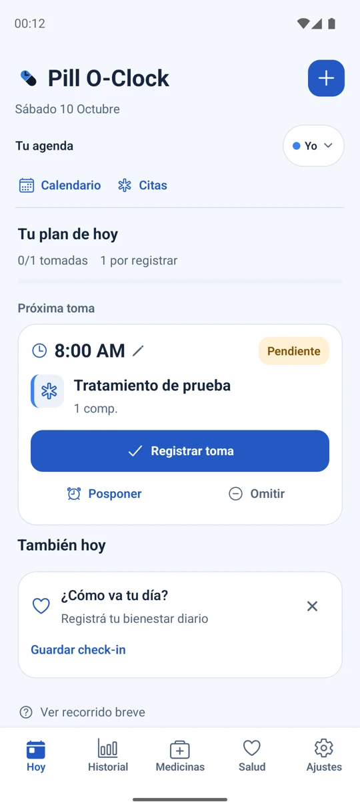
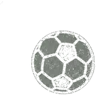
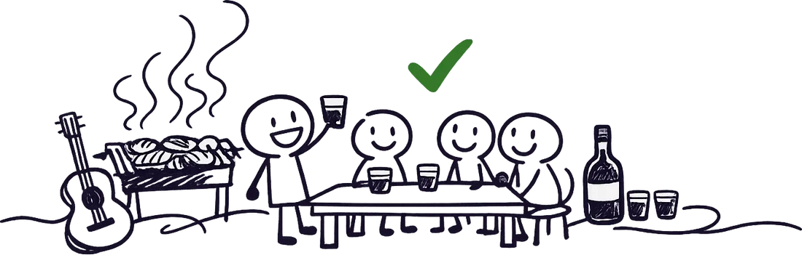

Independientes por naturaleza.
Softwarecon vidapropia.
Para cuidarte, recordar, entender el juego y compartir la cuenta. Hacemos lugar para lo que importa.
Conocé nuestros mundosNuestro pequeño universo
La vida está en los detalles.
Nuestras apps, también.
Hechas para quedarse.
Cuidarte empieza
por acordarte.
Un recordatorio que se hace escuchar. Tus medicamentos, tus horarios y tu historial, para que tu rutina tenga una cosa menos de la que preocuparse.
Conocer Pill O-Clock
Próxima toma · 20:00
Hay momentos
que merecen
quedarse.
Ese viaje. Esa fiesta. Esa foto que sacó alguien más. Reuní lo que vivieron en un álbum compartido y volvé a encontrarlo cuando quieras.
Descubrir RevelumLos buenos recuerdos se revelan.
El partido,
antes del
partido.
El fútbol tiene mucho de intuición. Y mucho para analizar. Probabilidades, contexto y evidencia para mirar cada partido con otra profundidad.
Entrar a Sharpkick
Toda buena lectura empieza en la pizarra.
Amigos son
los amigos.
Las cuentas, claras.
Del asado al viaje de fin de semana. Cada gasto en su lugar, cada parte bien repartida. Para que lo único que quede pendiente sea volver a juntarse.
Se está cocinando.
La buena cuenta de un buen día.
- Comida
- $ 32.000
- Bebidas
- $ 12.000
- Carbón y hielo
- $ 4.000
Las cuentas cierran. La charla sigue.
Una cuenta de ejemplo, entre amigos.
Detrás de los cuatro mundos
Una mirada propia.
De principio a fin.
Soy Giuliano Taliano. Diseño y desarrollo software independiente desde Buenos Aires. Estas apps nacen de cosas que vivo, que me importan y que creo que pueden funcionar mejor.
Cada una tiene su mundo. Todas comparten el mismo cuidado: una idea clara, una identidad propia y atención por las personas que las usan.
GitHub